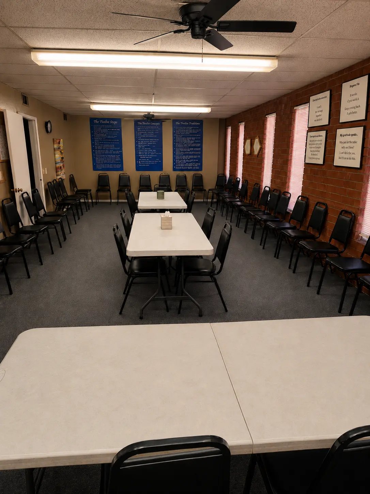
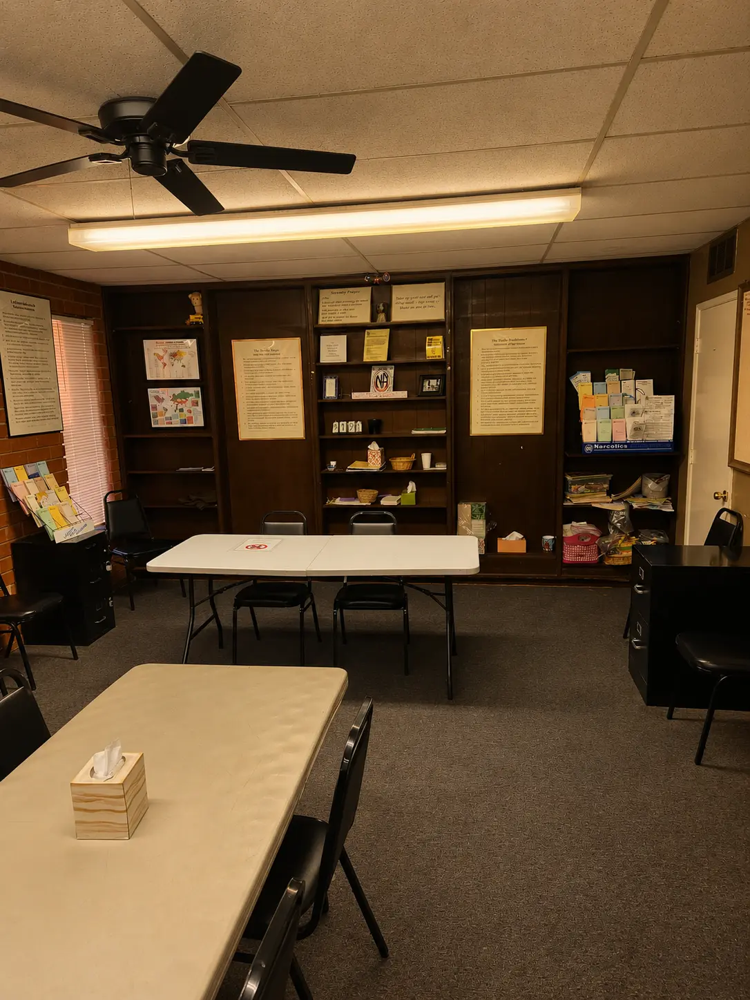
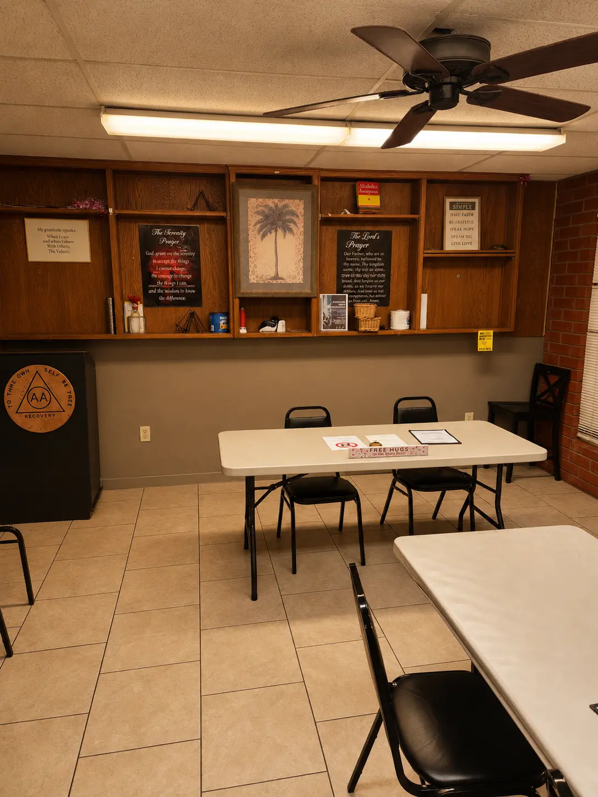
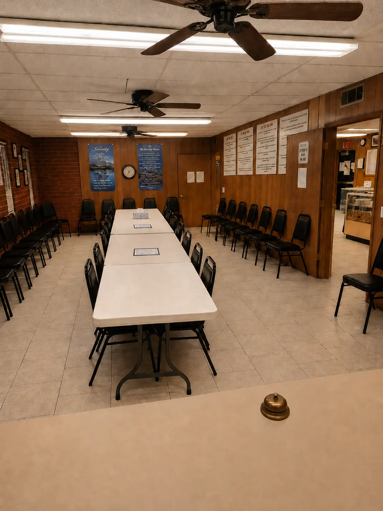

About the Arrid Club
🌟 Our Mission
The Arrid Club is a non-profit organization dedicated to providing a safe, welcoming, and supportive environment for individuals participating in 12-Step recovery programs. Our purpose is to maintain a place where people can come together for meetings, fellowship, social activities, and community support.
For decades, the Arrid Club has served as a place where individuals in recovery can find encouragement, connection, and hope. Whether someone is attending their first meeting or celebrating years of sobriety, our doors remain open to all who seek recovery and community.
🏛️ Our History
The Arrid Club was founded on June 20, 1973, and has continued to evolve alongside the San Jacinto Valley recovery community. Throughout the years, the club has called several locations home, beginning in a small former welding building near San Jacinto Street before relocating multiple times as the community grew.
From Main Street in San Jacinto to several additional locations throughout the valley, each move reflected one thing: growth. As more individuals found recovery and fellowship through the Arrid Club, the need for a larger and more permanent gathering place grew as well.
Today, the Arrid Club proudly serves the community from its home in Hemet, where it continues to provide a welcoming environment centered on recovery, fellowship, and support. More than just a building, the Arrid Club has become a place where friendships are formed, lives are changed, and countless people have found a sense of belonging.
☀️ More Than Meetings
The Arrid Club offers more than a meeting space. Along with daily recovery meetings, the club hosts social and community events throughout the year including breakfasts, workshops, gatherings, and other activities designed to strengthen connections among members and visitors alike.
For many people, the Arrid Club has become a second home, a place filled with support, encouragement, laughter, and fellowship.
A Place for Everyone
Whether you're new to recovery, returning after time away, supporting a loved one, or simply looking for community, you are welcome here.
Recovery begins with connection, and no one has to walk that journey alone.
🏛️ Our Meeting Spaces
The Arrid Club offers multiple meeting rooms across two floors, each set up to encourage openness, connection, and fellowship.

Upstairs — Main Meeting Area
A center view of our largest gathering space, with seating arranged around tables to create an open and welcoming setting for daily meetings and larger groups.

Upstairs — Leader & Secretary Area
The front of the upstairs room includes the leader and secretary tables, along with recovery literature and resources used during meetings.

Downstairs — Main Meeting Area
A view toward the downstairs leader and secretary area. This quieter room provides tables, chairs, and recovery materials for smaller meetings and groups.

Downstairs — Alternate View
Looking across the downstairs room from the opposite direction, showing its comfortable seating arrangement and dedicated meeting area.